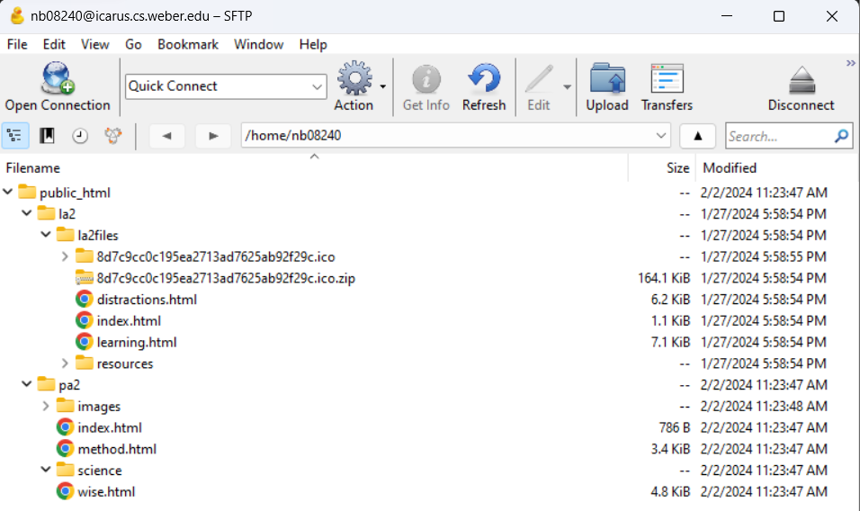

Uploading to Icarus
To upload to Icarus you will need to follow these steps.
VPN
If you are uploading from home you will need a VPN to connect to Weber. Weber.edu contains instructions for logging in.
puTTy
Next you will download puTTy. The program will ask for an IP to connect to. Type in "137.190.19.20" and log in using your username (initials + last 5 digits of your w-number) and password (W + initals + ~ + first five digits of w-number + soc + lowest CS class number). After successfully logging in
Cyberduck
Next you will download Cyberduck. Press "Open Connection" and log in again. To transfer a file drag and drop it from file explorer into Cyberduck. To transfer a directory, drag and drop a folder.
Composing the url
The last part of uploading to Icarus is creating the URL. This will be http://icarus.cs.weber.edu/~ + your Icarus username + folder name + filename. Once you have this URL you will be able to access your published site.
URL examples
